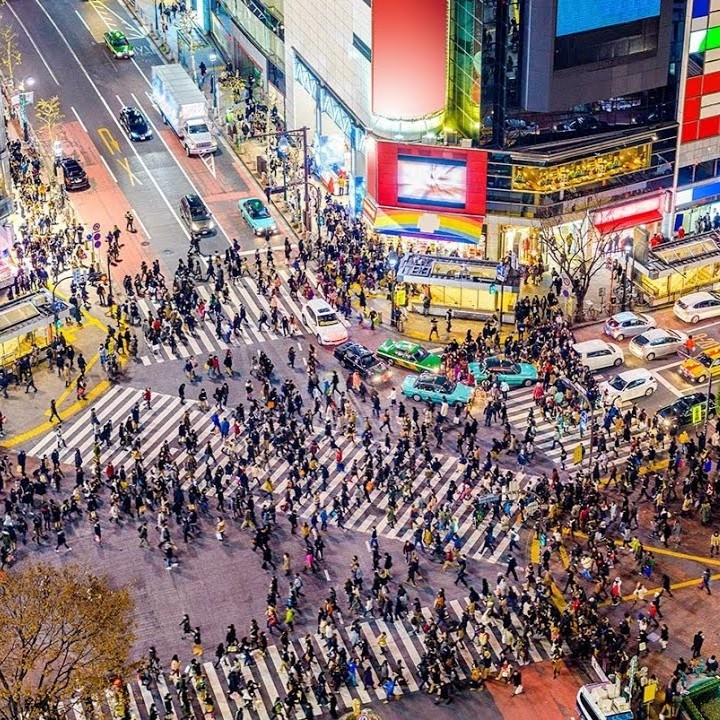
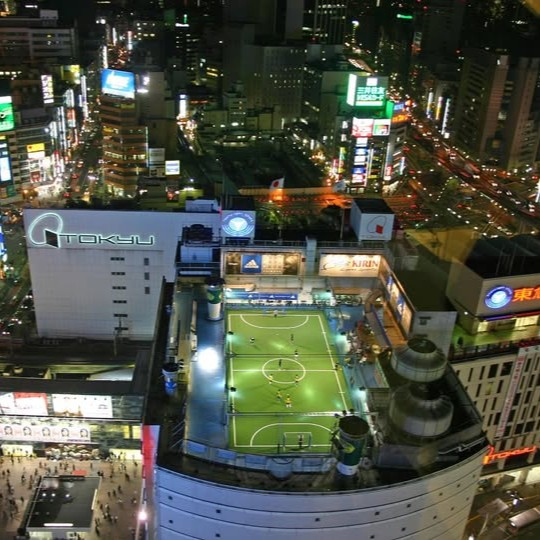
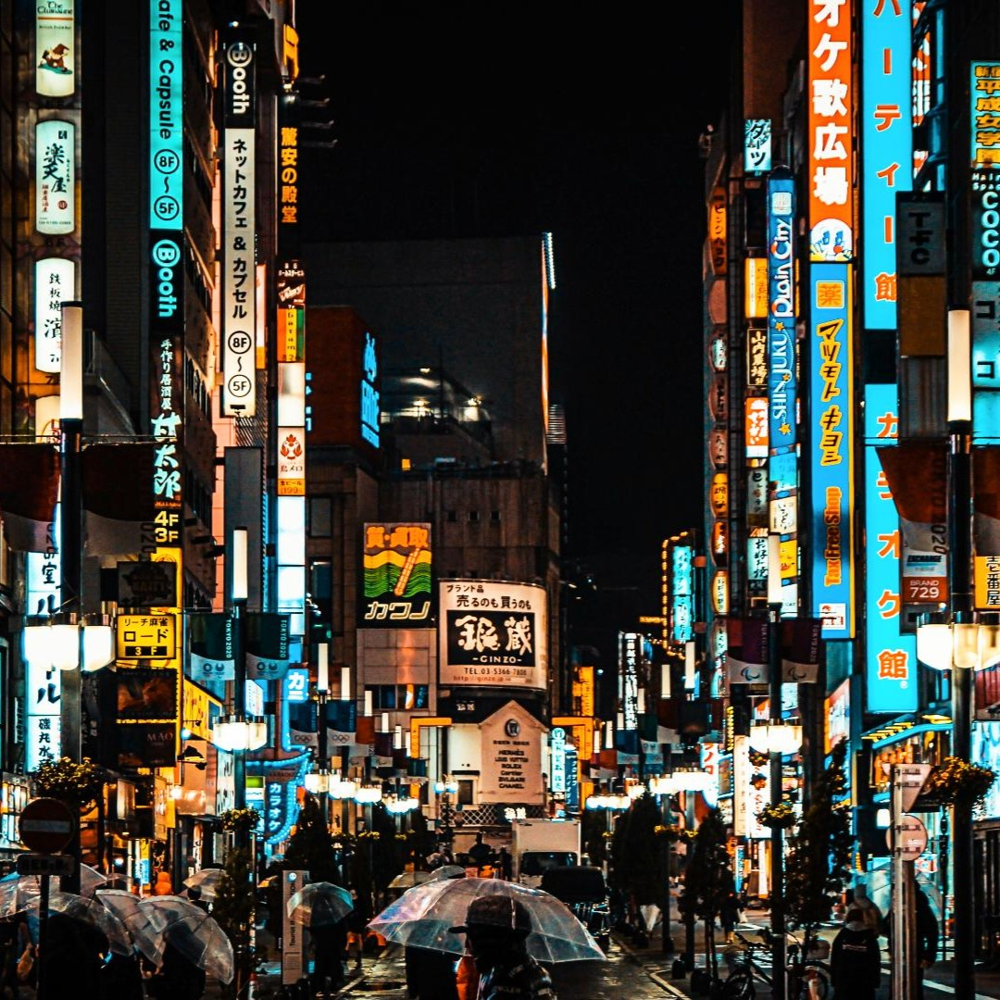
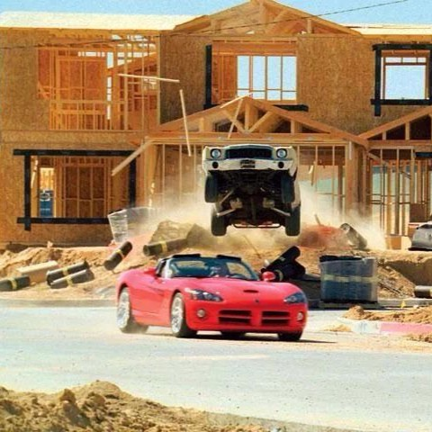
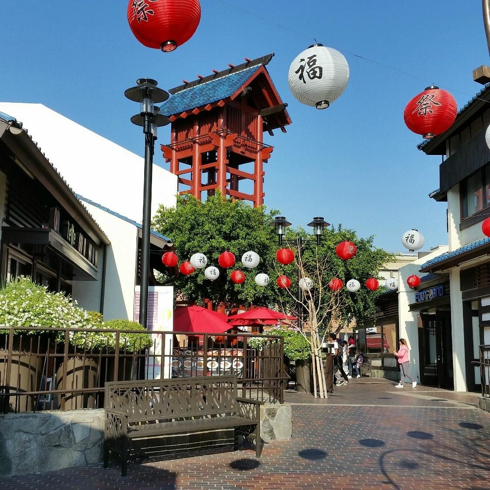

Sinopsis
Tras un aparatoso accidente en una carrera ilegal, Sean Boswell —cuya vida ha sido una constante huida de los problemas— se ve obligado a elegir: la cárcel o el exilio en Tokio bajo la custodia de su padre. En el corazón de Japón, Sean descubre accidentalmente el fascinante mundo del Drift, un estilo de conducción técnica que domina las calles niponas. Su imprudencia lo lleva a desafiar a Takashi, el "Rey del Drift", terminando con una deuda impagable que lo obliga a trabajar para Han Seoul-Oh, un astuto socio de la mafia local que ve en el joven extranjero a un aliado fuera del control de sus rivales.
Locaciones ¿Realmente se grabó en Japón?
Aunque la película respira la atmósfera de Tokio, la realidad es una mezcla astuta de locaciones reales y trucos de Hollywood
Tokio, Japón
Para dar autenticidad, el equipo viajó a Japón, pero enfrentaron un gran problema y es que en Tokio casi nunca se otorgan permisos para filmar persecuciones.
-Shibuya Crossing: La icónica escena donde los autos derrapan entre la multitud en el paso de cebra más famoso del mundo se grabó parcialmente guerrilla style (sin todos los permisos oficiales) y se completó con efectos visuales.
-Escenas de ambiente: Muchas tomas de transición en los barrios de Shinjuku (Kabukicho) y Harajuku (calle Takeshita) son reales, capturando la energía de las luces de neón y la cultura urbana
-Shibuya Adidas Futsal Park: La cancha de fútbol en la azotea que se ve desde el departamento de Han existe realmente sobre la estación de Shibuya.



Los Ángeles, California (Estudios y "Falso Japón")
Debido a las restricciones en Japón, gran parte de la acción se rodó en EE. UU
-Victorville, California: La carrera inicial de la película (la de los Chevrolet Monte Carlo y el Dodge Viper en la zona en construcción) se grabó en un desarrollo inmobiliario real en Victorville, en el desierto de California
-El estacionamiento del Drift: Las famosas rampas circulares donde Sean aprende a derrapar pertenecen al Hawthorne Plaza Shopping Center en California, un centro comercial abandonado muy usado por Hollywood
-Calles de "Tokio": Zonas como el Little Tokyo de Los Ángeles y áreas industriales en Terminal Island fueron transformadas con señales en japonés, máquinas expendedoras y neones para parecer calles niponas.
-La escuela de Sean: Aunque se supone que está en Tokio, se filmó en la Cabrillo High School en Long Beach, California

